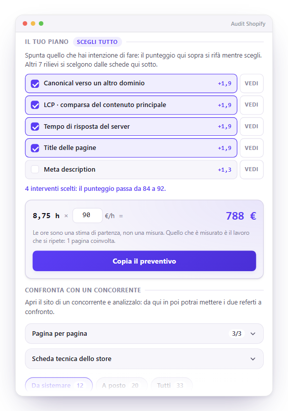
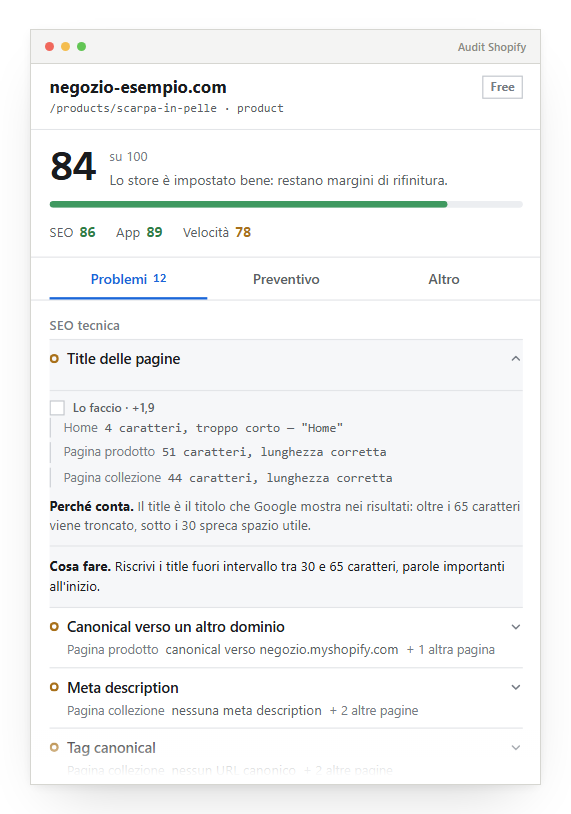
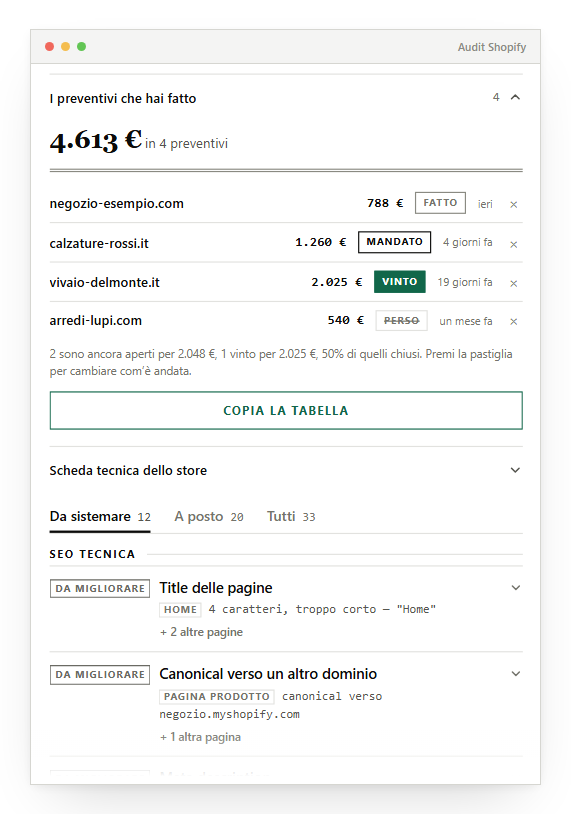
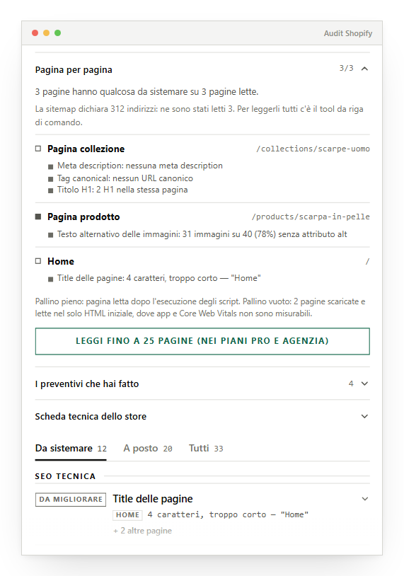

Apri un sito, premi l’icona. Spunti gli interventi che faresti e il punteggio si rifà davanti a te: 84 → 92. Sotto ci sono le ore, il prezzo alla tua tariffa e un preventivo pronto da mandare.
Vedi cosa faOppure fatti fare un audit gratuito da una persona.

Title, meta description, canonical, H1, dati strutturati, indicizzabilità. Su ogni pagina che legge, non solo sulla home.
Email marketing, recensioni, analytics e pixel: rilevati mentre girano davvero, anche quando li carica un tag manager.
Risposta del server, comparsa del contenuto, stabilità del layout, peso di JavaScript e CSS: misurati sulla navigazione reale, non simulati.
Se ChatGPT, Perplexity o Gemini possono leggere il sito, e se c’è il file llms.txt che spiega loro di cosa si occupa.
Il 70% degli store Shopify non ha email marketing attivo. Il 95% non ha un sistema di recensioni. Sono soldi di pubblicità sprecati senza un modo per far tornare il cliente.
Premi l’icona: l’estensione legge la pagina aperta dopo l’esecuzione degli script, ne scarica altre dal sito, e giudica una trentina di controlli con soglie dichiarate. In dieci secondi, senza chiedere niente a nessun server.
Home, scheda prodotto, collezione: i difetti di modello si vedono solo confrontando più pagine.
Gira dentro la pagina già eseguita, quindi trova anche gli strumenti caricati da un tag manager.
Nessun server, nessun account: l'analisi nasce e muore dentro il tuo browser.
Shopify, WooCommerce, WordPress: i consigli cambiano di conseguenza, invece di parlare sempre di temi Shopify.

Spunti quello che faresti e sotto compare un conto che si legge come un conto: 8,75 h × 90 €/h = 788 €. Un bottone lo copia già formattato per l’email, col tuo marchio, le voci una per riga e il punteggio che il cliente otterrà. Le ore non sono inventate: quello che è misurato davvero è quante pagine sono coinvolte, e il preventivo lo dichiara.
Ogni preventivo che copi resta segnato, e una pastiglia lo porta da fatto a mandato, vinto o perso. In cima trovi quanto vale il lavoro che stai aspettando, quanto ne hai preso, e quanti ne chiudi su quelli che hanno avuto una risposta.
Dalla seconda analisi in poi puoi scaricare il rapporto del lavoro svolto: 61 → 94, cosa hai sistemato, cosa è comparso dopo, cosa resta aperto. Dice anche quello che è peggiorato, perché un rapporto che mostra solo i successi il cliente smette di leggerlo al secondo invio. È il documento con cui ti fai riconfermare.
Non “priorità alta”: +5,2 punti. Il punteggio è una formula, quindi quanto rende sistemare una cosa ha una risposta esatta, e l’elenco è ordinato per quella. In fondo c’è scritto dove arrivi: “sistemando questi tre passi da 72 a 89”. Non è la somma dei punti mostrati, è il punteggio ricalcolato, cioè quello che vedrai davvero al prossimo esame.
“Quattro pagine senza description” non basta a chi deve aprirle. Legge fino a venticinque pagine prese dalla tua sitemap e ti dà la lista di lavoro per indirizzo: una pagina per volta, cosa c’è da sistemare sopra, le messe peggio in cima. Un’estensione che guarda solo la scheda aperta questo non può darlo.
Analizza il loro sito, torna sul tuo e mettili a confronto: gli stessi controlli, le stesse soglie, e l’elenco preciso di dove sono messi meglio. “Loro hanno le recensioni e tu no. Il loro server risponde 900 ms prima del tuo.” È la pagina che chiude un preventivo.
Dove la correzione si può scrivere, la scrive: il tag canonical con l’indirizzo giusto, il JSON-LD del prodotto con il nome vero, il file llms.txt già compilato con le tue pagine. Si copia con un tocco. Dove servirebbe inventare un testo, non lo inventa.
Chrome ha un modello linguistico che gira in locale. L’estensione lo usa per proporti una bozza di meta description o di title, partendo da quello che c’è già nella pagina. Nessuna chiave API, nessun costo a chiamata, e il contenuto dei tuoi clienti non esce dal computer.


E una cosa che quasi nessuno fa: dice quando non sa. Un controllo che non è stato possibile eseguire esce dal punteggio invece di passare per superato, e il referto lo dichiara.
L'estensione Chrome analizza il sito dentro il tuo browser. I piani a pagamento servono a consegnare il referto a un cliente: report PDF col tuo nome, senza limiti giornalieri.
Free
0€
per sempre
Pro
19€ / mese
per chi cura i propri siti
Agenzia
49€ / mese
per chi lavora su più clienti
Dopo il pagamento ricevi per email una chiave di licenza da incollare nell'estensione. La chiave viene verificata dentro il browser: nessun account da creare, nessun dato dei tuoi clienti che esce dal tuo computer. Si disdice quando vuoi.
Compila i campi qui sotto: il report arriva per email entro 24 ore.